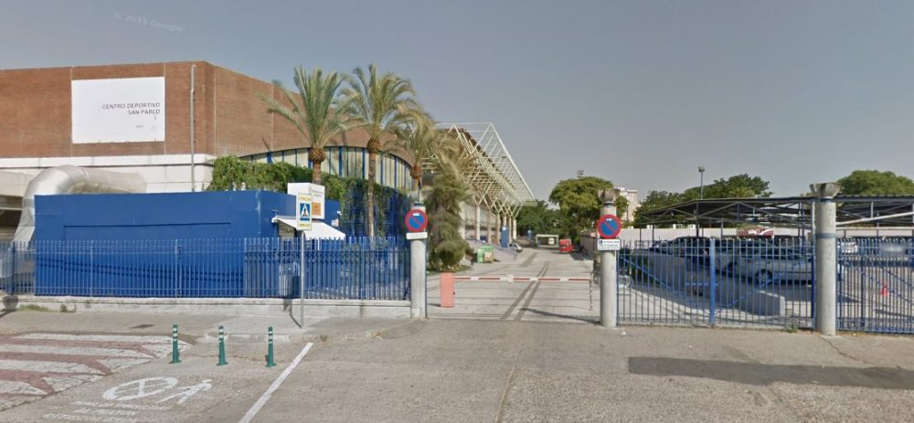

San Pablo: Nuestro Hogar
Ubicados Polígono San Pablo, nuestro club es un reflejo de su gente:humilde y luchadora. No somos solo un recinto deportivo, somos una familia. Aquí se respira identidad y se defiende el escudo del barrio con orgullo en cada partido.